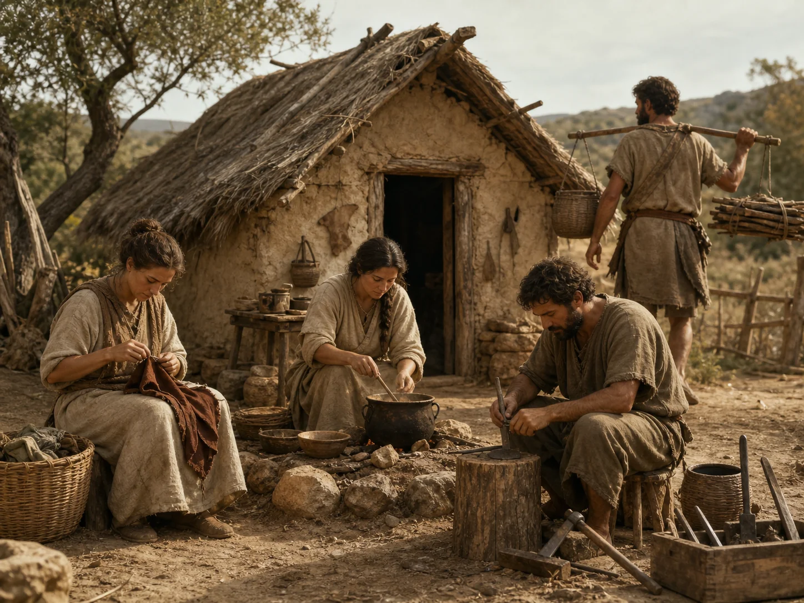

เปิด Unit 2 ด้วยภาพรวมของต้นทุนการอยู่ในโลกที่การแลกเปลี่ยนยังลื่นไม่พอ
ทำให้ผู้เรียนเห็นว่าปัญหาก่อนมีเงินไม่ใช่แค่เรื่องซื้อขายยาก แต่ลามไปถึงโครงสร้างการแบ่งงานกันทำทั้งสังคม
ก่อนจะมีเงิน มนุษย์ก็ยังต้องกิน ต้องอยู่ ต้องหาที่พัก ต้องมีเสื้อผ้าเหมือนเดิม แต่ปัญหาคือทุกคนต้องจัดการทุกอย่างด้วยตัวเองมากกว่าที่เป็นอยู่ทุกวันนี้
ในสังคมแบบนั้น การแบ่งงานกันทำยังเกิดได้ไม่มาก เพราะแต่ละคนต้องใช้เวลาไปกับการเอาตัวรอดแทบทุกเรื่อง

ขยับจากปัญหาเรื่องมูลค่า ไปสู่ปัญหาเชิงโครงสร้างของการแลกเปลี่ยน คือความต้องการของสองฝ่ายไม่ตรงกันพอดี
ทำให้ผู้เรียนเข้าใจว่าต่อให้ของมีมูลค่าใกล้กัน ปัญหาก็ยังเกิดขึ้นได้ถ้าความต้องการของสองฝ่ายไม่ประกบกันในเวลาเดียวกัน
ต่อให้ของมีมูลค่าใกล้กัน ปัญหาก็ยังไม่จบ ถ้าอีกฝ่ายไม่อยากได้สิ่งที่เรามีในตอนนั้น การแลกก็ไม่เกิดอยู่ดี
สิ่งที่ขาดไปจึงไม่ใช่แค่ของสำหรับแลก แต่คือตัวกลางที่ช่วยให้เราไม่ต้องรอให้ความต้องการของสองฝ่ายตรงกันแบบพอดีเป๊ะ
คลี่ tension และวาง thesis หลักแรกของบทว่าเงินคือเครื่องมือของการร่วมมือกันในสังคมที่ซับซ้อน
เปลี่ยนมุมมองของผู้เรียนจาก เงินคือของที่ใช้ซื้อของ ไปสู่ เงินคือสิ่งที่ทำให้คนจำนวนมากร่วมมือกันได้
เมื่อมีตัวกลางที่ทุกคนยอมรับได้ การแลกเปลี่ยนก็ไม่ต้องรอการจับคู่ความต้องการแบบตรงตัวอีกต่อไป
คนจึงสามารถทำงานเฉพาะทางลึกขึ้น เข้าถึงสิ่งที่ตัวเองไม่ได้ผลิต และทำให้สังคมขยายใหญ่ขึ้นได้